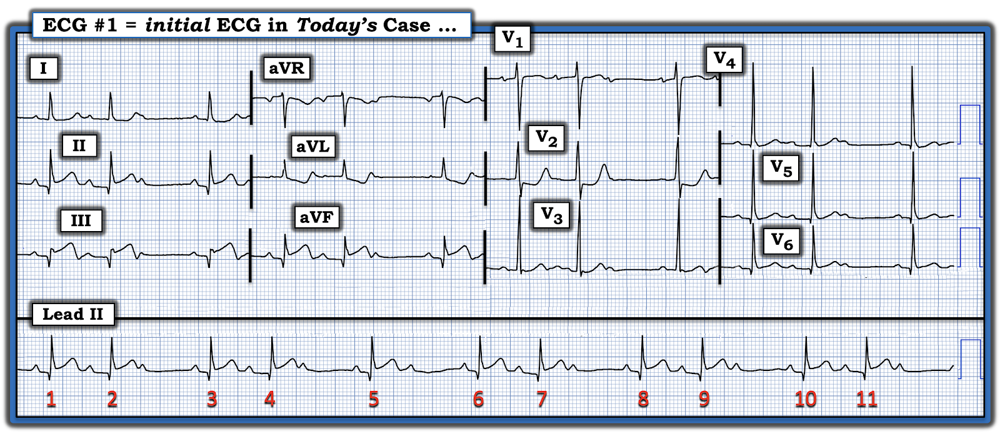
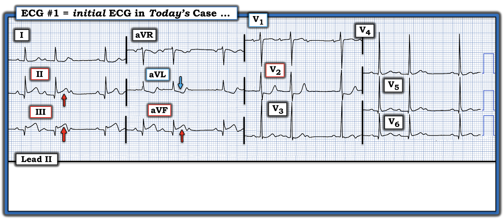
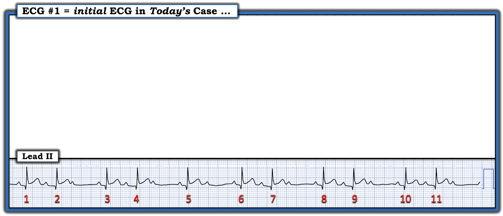
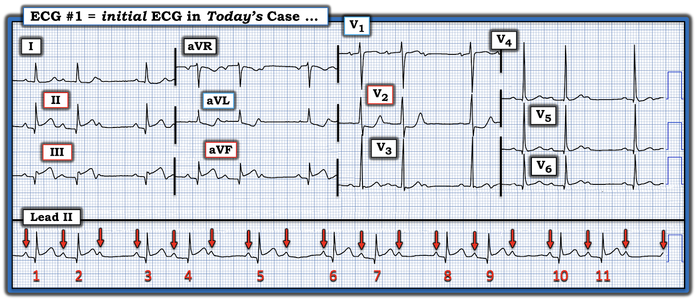
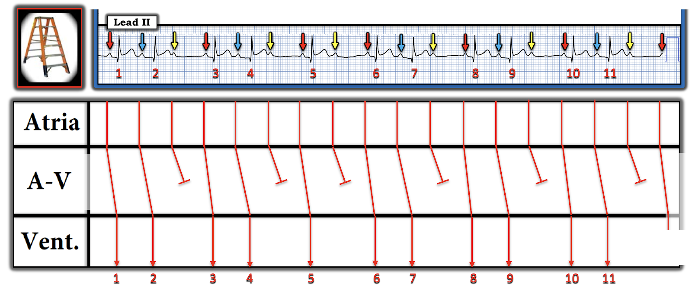

ECG Blog #472 — Ít nhất 4 dấu hiệu quan trọng
Điện tâm đồ ở Hình-1 được ghi từ một người đàn ông trung niên — đến ED (khoa cấp cứu — Emergency Department) vì đau ngực đã 6 giờ. Bệnh nhân ổn định huyết động.
CÂU HỎI:
- Đúng như tiêu đề của bài viết này — Bạn có thể nhận ra bao nhiêu dấu hiệu quan trọng?


SUY NGHĨ CỦA TÔI về điện tâm đồ #1:
Đánh giá nhanh, tiết kiệm thời gian là MẤU CHỐT khi bệnh nhân của bạn đến vì CP mới xuất hiện (đau ngực — Chest Pain). Quyết định có kích hoạt phòng thông tim (cath lab) hay không phải được đưa ra nhanh chóng để đạt lợi ích tối ưu. Trong ca hôm nay, một khi bạn biết điện tâm đồ ở Hình-1 là của một người đàn ông có CP mới xuất hiện — chỉ cần chưa tới 1 phút để biết rằng cần kích hoạt phòng thông tim. Phần dưới đây phản ánh "Khảo sát 1 phút của tôi" đối với điện tâm đồ ở Hình-1:
- Vì bệnh nhân này đến vì CP — ban đầu tôi tập trung vào điện tâm đồ 12 chuyển đạo, trước hết xem có MI rõ ràng hay không. Khi làm vậy — "mắt" tôi lập tức bị hút về 3 chuyển đạo dưới — mỗi chuyển đạo đều có ST chênh lên đáng kể (các mũi tên ĐỎ ở Hình-2). Nói thêm bên lề — cũng có gợi ý sóng T đảo ngược ở phần cuối (thấy rõ nhất ở phức bộ QRS thứ 3 tại chuyển đạo III — và ở mức độ ít hơn tại chuyển đạo aVF).
- ĐIỂM THEN CHỐT (PEARL) #1: Ở bệnh nhân có CP mới xuất hiện, sự xác nhận rằng ST chênh lên ở các chuyển đạo dưới là do MI cấp sẽ có ngay lập tức — NẾU có ST chênh xuống soi gương (reciprocal) ở chuyển đạo aVL. Mũi tên XANH ở chuyển đạo aVL xác nhận rằng hình ảnh ST-T đối xứng ngược chiều như soi gương của ST chênh xuống soi gương này có hiện diện. Như vậy, tổng thời gian cần để xác nhận MI thành dưới cấp đang diễn ra ở bệnh nhân có CP mới này lý tưởng nhất là chưa tới 30 giây (vừa đủ thời gian để nhìn các chuyển đạo II,III,aVF và chuyển đạo aVL). Do đó, ngay cả trước khi nhìn phần còn lại của bản ghi này — chúng ta đã biết rằng cần kích hoạt phòng thông tim .
- ĐIỂM THEN CHỐT #2: Việc ST chênh lên ở chuyển đạo III > chuyển đạo II (kèm ST chênh xuống soi gương rõ rệt ở chuyển đạo aVL) — gợi ý mạnh tắc cấp RCA (động mạch vành phải — Right Coronary Artery) là động mạch "thủ phạm". Và mặc dù xác định động mạch "thủ phạm" có khả năng là một điểm nâng cao — điều đó thực sự có ý nghĩa lâm sàng ở đây, vì RCA cấp máu cho RV (thất phải — Right Ventricle) — còn LCx (động mạch mũ trái — Left Circumlflex) thì không (Xem ĐIỂM THEN CHỐT #4,5 bên dưới).
- ĐIỂM THEN CHỐT #3: Khi đã biết có STEMI thành dưới cấp — tiếp theo tôi xem có kèm tổn thương thành sau cấp hay không (điều rất hay đi kèm MI thành dưới). Để làm vậy, tôi tập trung vào chuyển đạo V2 — cho thấy: i) Vùng chuyển tiếp sớm (Sóng R ở V2 đã cao hơn nhiều so với độ sâu của sóng S ở chuyển đạo này); — và, ii) Đoạn ST dẹt dạng bậc thềm (shelf-like) (nếu không nói là chênh xuống dốc xuống), với góc gập đột ngột tại chỗ khởi đầu của một sóng T trông có vẻ cấp tính, dường như nhọn quá mức. Điều này xác nhận MI thành sau cấp.
- ĐIỂM THEN CHỐT #4: Lưu ý ở chuyển đạo V1 kế bên không có ST chênh xuống. Thay vào đó, đoạn ST ở chuyển đạo V1 có dạng vòm và hơi chênh lên — điều này, cùng với nghi ngờ tắc RCA cấp, gợi ý mạnh tổn thương RV cấp!
- ĐIỂM THEN CHỐT #5: Khi có được chút thời gian rảnh — nên ghi các chuyển đạo bên phải để xác nhận nhồi máu thất phải (RV MI) cấp. Trong lúc chờ — tốt nhất nên tránh nitroglycerin ngậm dưới lưỡi, vì tác dụng giãn mạch của thuốc có thể gây tụt huyết áp trong nhồi máu RV phụ thuộc thể tích. Hãy sẵn sàng truyền dịch tĩnh mạch một cách thận trọng nếu huyết áp giảm (Xem ECG Blog #190 — để biết thêm về RV MI và đặc điểm huyết động khác biệt của nó).


Dải nhịp chuyển đạo II dài:
Vì được biết bệnh nhân hôm nay ổn định huyết động tại thời điểm ghi điện tâm đồ ban đầu — lúc đầu tôi ít chú ý hơn đến dải nhịp chuyển đạo II dài ở Hình-1.
- Và — lúc này chúng ta đã biết bệnh nhân có CP mới này đang có MI dưới-sau đang diễn ra (và việc thông tim ngay là có chỉ định).
Đến đây — tôi xem kỹ hơn nhịp tim (Hình-3):
- Ngoại trừ nhát #5 — có nhịp theo nhóm (group beating) dưới dạng các nhóm 2 nhát lặp lại với kiểu luân phiên giữa khoảng R-R ngắn hơn và dài hơn, có thời gian tương tự nhau.
- QRS hẹp.
- Sóng P có hiện diện — nhưng nhiều sóng P trong số này không được dẫn truyền.
- ĐIỂM THEN CHỐT #6: Điều thường gặp thì hay gặp! Trong bối cảnh MI thành dưới cấp — nhịp theo nhóm với các khoảng ngưng ngắn và sóng P không dẫn truyền gần như luôn luôn hóa ra là Wenckebach AV ( = blốc AV độ 2 Mobitz loại I).


===================================
XIN NHẤN MẠNH: Tất cả các dấu hiệu nêu trên mà tôi đã bàn đều nên được nhận ra trong vòng 1 phút đầu tiên bạn nhìn điện tâm đồ ban đầu hôm nay.
- Lý tưởng nhất — lúc này phòng thông tim đã được kích hoạt.
===================================
Xem kỹ hơn điện tâm đồ ban đầu:
Điện tâm đồ ban đầu hôm nay còn nhiều điều hơn nữa. Khi lý tưởng là đã hội chẩn tim mạch (hy vọng với kế hoạch thông tim sớm) — và bệnh nhân hy vọng vẫn ổn định huyết động — sẽ có chút thời gian để đánh giá kỹ lưỡng hơn (Xem Hình-4 bên dưới):
- Nhìn kỹ chuyển đạo V6 — cũng thấy ST chênh lên nhẹ ở đây. Như vậy, đang có MI dưới-sau-bên (có thể kèm tổn thương RV — chờ xác nhận bằng các chuyển đạo bên phải).
- Mặc dù chưa thỏa tiêu chuẩn điện tâm đồ của LVH — tôi nghĩ LVH là có khả năng, do biên độ sóng R lớn ở V3,V4,V5 (dù biên độ QRS thường dao động khi nhồi máu đang diễn ra — nên siêu âm tim (Echo) làm vào lúc nào đó sau khi đã ổn định mới là xét nghiệm để đánh giá kích thước và chức năng các buồng tim).
- Sóng ST-T tương đối dẹt ở các chuyển đạo giữa ngực. Tuy không làm thay đổi kế hoạch trước mắt cho bệnh nhân này (là thông tim ngay, có lẽ kèm PCI cho RCA bị tắc) — tình trạng sóng ST-T dẹt không đặc hiệu này khiến tôi tự hỏi liệu bệnh nhân có bệnh nhiều nhánh mạch vành hay không.
- ĐIỂM THEN CHỐT #7: Các sóng q nhỏ và hẹp ở các chuyển đạo ngực bên V5,V6 có vẻ là "sóng q vách bình thường". Nhưng — các sóng Q lớn hơn dự kiến ở mỗi chuyển đạo dưới (đặc biệt ở chuyển đạo III) — có lẽ là hậu quả của STEMI thành dưới cấp đang diễn ra ở bệnh nhân này.
- Sóng R cao đáng ngạc nhiên đã có ngay ở chuyển đạo V2 có lẽ là tương đương ở thành sau của các sóng Q ở chuyển đạo dưới này (Phần lớn bệnh nhân MI thành sau cấp chưa biểu hiện vùng chuyển tiếp sớm với sóng R cao ở các chuyển đạo trước trên điện tâm đồ ban đầu). Các sóng Q ở chuyển đạo dưới và sóng R cao do chuyển tiếp sớm ở chuyển đạo V2 có lẽ là dấu ấn của MI đang diễn ra ở bệnh nhân này, bắt đầu khoảng ~6 giờ trước cùng lúc khởi phát CP.
- "Tin tốt" — là gợi ý đã nhận thấy trước đó về sóng T đảo ngược ở phần cuối tại chuyển đạo III và aVF (cũng như phần cuối sóng T dương ở chuyển đạo aVL) — có thể là dấu hiệu cho thấy tái tưới máu tự phát động mạch "thủ phạm" đang bắt đầu xảy ra. Dù sao — với CP còn tiếp diễn và ST chênh lên dai dẳng, thông tim ngay kèm PCI vẫn có chỉ định ngay lập tức!
- ĐIỂM THEN CHỐT #8: Chúng ta có thể nhanh chóng "khoanh vùng" một chẩn đoán cụ thể hơn cho nhịp ở Hình-4. Chẳng phải thao tác đơn giản là đánh dấu các sóng P giúp nhận ra mối liên hệ giữa từng sóng P và phức bộ QRS kế bên dễ hơn rất nhiều sao? BẠN nghĩ sao?


Thêm về nhịp ban đầu ở Hình-4:
Như đã nêu ở ĐIỂM THEN CHỐT #6 — Chúng ta nên nghi ngờ Wenckebach AV ( = blốc AV độ 2 Mobitz loại I) trong vòng vài giây khi thấy điện tâm đồ ban đầu, vì STEMI thành dưới đã rõ và — "Điều thường gặp thì hay gặp!"
- Trong bối cảnh MI thành dưới cấp — nhịp theo nhóm với các khoảng ngưng ngắn và sóng P không dẫn truyền gần như luôn luôn hóa ra là Wenckebach AV.
- Đánh dấu sóng P (như chúng tôi đã làm ở Hình-4) sẽ giúp ta nhận ra ngay rằng khoảng PR giống hệt nhau xuất hiện trước mỗi QRS kết thúc mỗi khoảng ngưng ngắn (tức là, Ta thấy cùng một khoảng PR bình thường trước các nhát #1,3,5,6,8 và 10).
- Tập trung vào bên trong mỗi nhóm 2 nhát — dễ thấy rằng khoảng PR thứ 2 trong mỗi nhóm dài ra (Khoảng PR trước các nhát #2,4,7,9 và 11 dài hơn khoảng PR trước các nhát #1,3,6,8 và 10).
- Mỗi chu kỳ Wenckebach sau đó kết thúc bằng sóng P không dẫn truyền sau các nhát #2,4,5,7,9 và 11.
Giản đồ bậc thang (laddergram) của Hình-4:
Các mối liên hệ trên dễ nhận ra hơn khi xem giản đồ bậc thang mà tôi đã vẽ ở Hình-5.
- Mũi tên ĐỎ đánh dấu các sóng P xoang bình thường dẫn truyền với khoảng PR bình thường cho nhát thứ 1 trong mỗi nhóm.
- Sóng P thứ 2 trong mỗi nhóm dẫn truyền với khoảng PR dài hơn (mũi tên XANH trước các nhát #2,4,7,9 và 11).
- Mũi tên VÀNG đánh dấu các sóng P xoang đúng lúc nhưng không dẫn truyền được do blốc. Nhịp là blốc AV độ 2 Mobitz loại I — với chủ yếu dẫn truyền AV 3:2 (vì trừ một nhóm, tất cả các nhóm đều có 3 sóng P xoang đúng lúc, trong đó chỉ 2 sóng P được dẫn truyền).
- Nhát QRS đơn lẻ nhát #5 biểu hiện dẫn truyền AV 2:1 (tức là, Có 2 sóng P xoang đúng lúc — nhưng chỉ 1 trong số đó được dẫn truyền).


Có cần điều trị nhịp này không?
- Có những lúc Atropine là biện pháp điều trị hiệu quả, hoặc ít nhất là biện pháp tạm thời cho blốc AV độ 2, và thậm chí cả blốc AV độ 3. Điều này đặc biệt đúng trong những giờ đầu của MI thành dưới cấp (trong thời gian này trương lực phó giao cảm nhiều khả năng tăng, và do đó đáp ứng tốt hơn với Atropine).
- Atropine ít có khả năng hiệu quả hơn nhiều nếu phức bộ QRS rộng — vì điều này gợi ý blốc AV ở mức thấp hơn (Atropine hiệu quả nhất khi blốc AV ở mức nút AV — như thường gặp trong MI thành dưới với QRS hẹp).
- Tuy nhiên, Atropine không vô hại. Dù tác dụng của thuốc cải thiện dẫn truyền AV — thuốc có thể làm tăng tần số xoang, gây nhịp nhanh xoang với tác dụng bất lợi. Vì vậy, nên dành thuốc này cho bệnh nhân blốc AV Mobitz I hoặc blốc AV độ 3 QRS hẹp do MI thành dưới cấp mà bệnh nhân mất ổn định huyết động vì blốc AV.
- Atropine không có chỉ định trong ca hôm nay vì: i) Chúng ta được biết bệnh nhân này ổn định huyết động; — ii) Tần số thất chung ở Hình-5 không chậm; — và, iii) Thông tim ngay kèm PCI là điều trị được lựa chọn cho bệnh nhân hôm nay. Rất có khả năng blốc AV sẽ nhanh chóng hết sau PCI.
Có nên dùng Morphine cho CP của bệnh nhân này?
- Trước đây — Morphine được dùng thường quy cho bệnh nhân CP cấp. Thực hành này không còn được khuyến cáo thường quy cho đến khi đã có quyết định điều trị dứt khoát. Một khi bạn biết cần thông tim ngay (hoặc nếu không có khả năng thông tim — một khi bạn bắt đầu điều trị tiêu sợi huyết) — thì giảm CP cho bệnh nhân bằng morphine hoặc thuốc khác trở thành ưu tiên cao. Ví dụ, trong ca hôm nay — ngay khi bác sĩ can thiệp đồng ý rằng cần thông tim ngay — có thể dùng Morphine! (và như đã bàn ở trên — nhu cầu thông tim ngay trong ca hôm nay nên được xác định trong vòng vài phút).
- Ngược lại — nếu bạn (và bác sĩ tim mạch hội chẩn) chưa chắc chắn về nhu cầu thông tim ngay kèm PCI — thì tốt nhất nên tránh Morphine cho đến khi bạn trở nên chắc chắn về quyết định điều trị. Lý do là dùng Morphine sớm có thể che lấp triệu chứng — và điều này đã được chứng minh là làm chậm điều trị dứt khoát bằng PCI hoặc tiêu sợi huyết.
- Vì lý do này — điều thiết yếu là đẩy nhanh quá trình chẩn đoán. Thời gian là cơ tim. Ở bệnh nhân có CP mới đáng lo ngại — nếu điện tâm đồ ban đầu chưa cho chẩn đoán xác định OMI cấp — hãy ghi lại điện tâm đồ trong vòng 15-20 phút, và tiếp tục ghi các điện tâm đồ liên tiếp thường xuyên, xét nghiệm troponin và theo dõi lâm sàng sát cho đến khi bạn có thể xác định chắc chắn LIỆU bệnh nhân có (hay không) đang bị nhồi máu tiến triển.
==================================
Lời cảm ơn: Xin cảm ơn Abdullah Al Mamun (từ Dhaka, Bangladesh) đã cung cấp ca bệnh hôm nay và bản ghi này.
==================================

PHẦN BỔ SUNG #1 (ngày 8 tháng 3 năm 2025) — về thuật ngữ "OMI"
Thuật ngữ mới mà tôi ủng hộ bổ sung "OMI" ( = nhồi máu cơ tim do tắc — Occlusion-based Myocardial Infarction) vào phân loại MI cấp. Điều này nhằm thừa nhận thực tế lâm sàng rằng ít nhất 1/3 tất cả các trường hợp tắc động mạch vành cấp không biểu hiện đủ mức ST chênh lên để đạt tiêu chuẩn "STEMI" (và nhiều OMI hoàn toàn không có ST chênh lên — mặc dù thông tim đã chứng minh có tắc động mạch vành).
- Nhiều OMI cấp trong số này có thể nhận ra dễ dàng trên điện tâm đồ (như tôi đã minh họa trong vô số bài viết trên ECG Blog này — cũng như trên Dr. Smith's ECG Blog).
- Lợi ích tương đương từ tái tưới máu cấp (bằng PCI hoặc tiêu sợi huyết) được thấy ở bệnh nhân tắc động mạch vành cấp do OMI cũng như do STEMI. Vì vậy — MỤC TIÊU của tôi là "lan truyền thông điệp" tới càng nhiều người làm lâm sàng càng tốt — rằng chú ý tới một số ít thông số lâm sàng có thể nhanh chóng nâng cao khả năng nhận ra OMI cấp của bác sĩ (mà không lãng phí thời gian quý báu, vốn có nguy cơ mất đi cơ tim còn sống trong sự chờ đợi vô ích một ST chênh lên có thể không bao giờ xảy ra).
LƯU Ý: Như trong Hình-6 — tôi đã thêm các thẻ vào menu trên cùng của mọi trang trong ECG Blog của tôi để dễ truy cập các ĐƯỜNG LINK tới tài liệu nhấn mạnh các khái niệm trên, liên quan đến nhận biết và điều trị sớm OMI cấp khi tiêu chuẩn STEMI dựa trên milimét không được thỏa mãn.
- Trong "My ECG Podcasts" — Hãy xem ECG Podcast #2 (Các lỗi đọc điện tâm đồ dẫn đến bỏ sót tắc động mạch vành cấp).
- Trong "My ECG Videos" — Hãy xem gần đầu trang đó các VIDEO từ các buổi MedAll ECG Talks của tôi, ôn lại chẩn đoán điện tâm đồ của MI cấp — và cách nhận ra OMI cấp khi không đạt tiêu chuẩn STEMI (được ôn lại trong ECG Blog #406 — Blog #407 — Blog #408).
- Xin LƯU Ý — Với mỗi video trong số 6 video MedAll ở đầu trang My ECG Videos, NẾU bạn bấm vào "More" trong phần mô tả, bạn sẽ thấy Mục lục có liên kết cho phép nhảy tới phần bàn luận các điểm cụ thể (tức là, tại 5:29 trong video 22 phút của Blog #406 — bạn có thể nhảy tới "You CAN recognize OMI without STEMI findings!" (Bạn CÓ THỂ nhận ra OMI mà không cần dấu hiệu STEMI!) ).

PHẦN BỔ SUNG #2 (ngày 8 tháng 3 năm 2025):
- Dưới đây tôi đưa vào một Audio Pearl — một Video Pearl — và các đường link tải PDF ôn lại chẩn đoán điện tâm đồ các blốc AV.

MỤC TIÊU của tôi trong ECG Video dài 15 phút dưới đây — là làm rõ chẩn đoán điện tâm đồ các blốc AV độ 2, gồm 3 loại:
- Mobitz I ( = Wenckebach AV).
- Mobitz II.
- Blốc AV độ 2 kèm dẫn truyền AV 2:1.

ECG Video (Media PEARL #52) dài 15 phút này — ôn lại 3 loại blốc AV độ 2 — cộng thêm — thuật ngữ khó định nghĩa blốc AV "mức độ cao". Tôi bổ sung nội dung này bằng 2 tài liệu phát tay PDF sau.
- Mục 2F (6 trang = Câu trả lời "ngắn") trong sách ECG-2014 Pocket Brain của tôi cung cấp phần ôn tập nhanh bằng văn bản về các blốc AV (Đây là tài liệu tải miễn phí).
- Mục 20 (54 trang = Câu trả lời "dài") trong ACLS-2013-Arrhythmias phiên bản Mở rộng của tôi bàn chi tiết các blốc AV LÀ GÌ — và chúng không phải là gì! (Đây là tài liệu tải miễn phí).
=======================
Các bài ECG Blog liên quan đến ca hôm nay:
- ECG Blog #185 — Ôn lại Cách tiếp cận Ps, Qs, 3R để đọc nhịp một cách hệ thống.
- ECG Blog #188 — Ôn lại cách đọc và vẽ giản đồ bậc thang (kèm ĐƯỜNG LINK tới hơn 50 ca có giản đồ bậc thang — nhiều ca có minh họa tuần tự từng bước).
- ECG Blog #164 — Ôn lại từng bước chẩn đoán blốc AV độ 2 Mobitz I (kèm minh họa tuần tự bằng giản đồ bậc thang).
- ECG Blog #154 và ECG Blog #55 và ECG Blog #224 và ECG Blog #232— MI cấp kèm Wenckebach AV.
- ECG Blog #262 — Một ca khác về Mobitz I kèm MI thành dưới.
- ECG Blog #63 — Mobitz I kèm các nhát thoát bộ nối.
- ECG Blog #80 — Ôn lại cách xác định động mạch "thủ phạm" và — áp dụng nghiệm pháp soi gương (Mirror Test) để nhận ra MI thành sau cấp.
- ECG Blog #246 — Ôn lại cách dùng "nghiệm pháp soi gương" để dễ nhận ra MI thành sau cấp.
- ECG Blog #193 — Ôn lại khái niệm "OMI" ( = MI do tắc — Occlusion-based MI) — kèm một Audio Pearl ôn lại những điều cơ bản để dự đoán động mạch "thủ phạm".
- ECG Blog #294 — Ôn lại một ca để minh họa các khái niệm then chốt về dự đoán động mạch "thủ phạm" — và nhận biết khi nào tái tưới máu xảy ra.
- ECG Blog #228 — Ôn lại khái niệm MI "thầm lặng".
- ECG Blog #184 — minh họa mối liên hệ đối xứng ngược chiều như soi gương "kỳ diệu" khi thiếu máu cục bộ cấp giữa chuyển đạo III và chuyển đạo aVL.